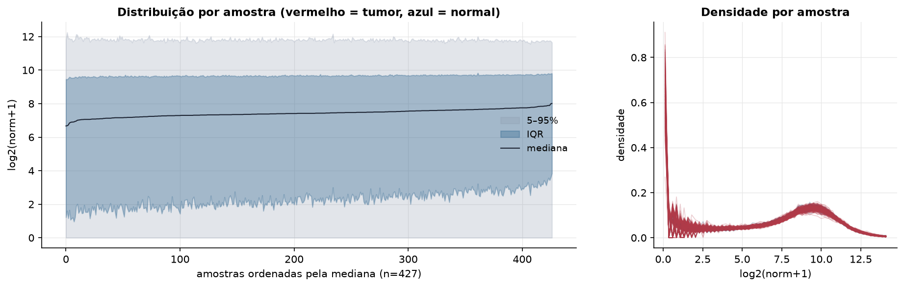
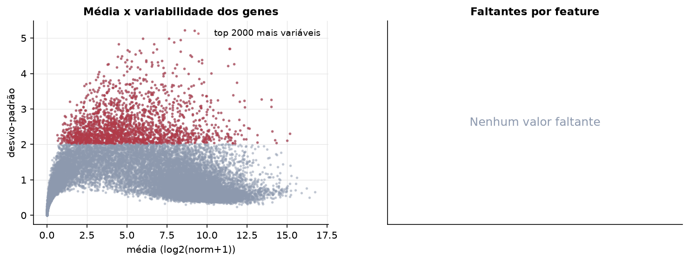
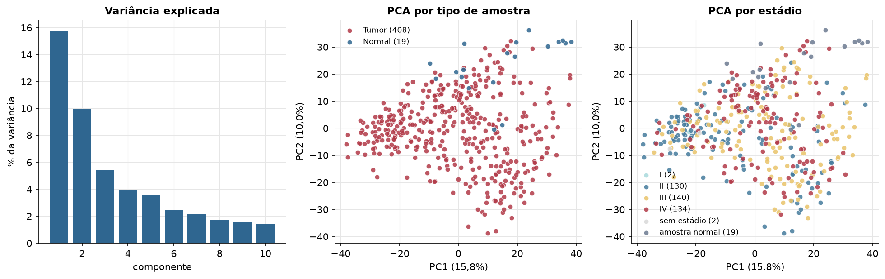
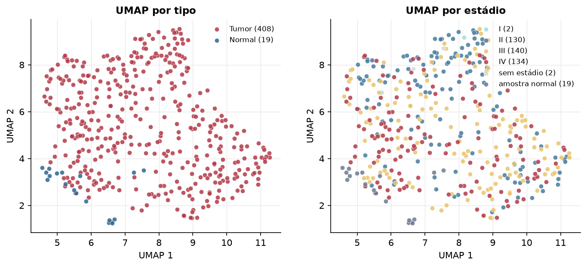
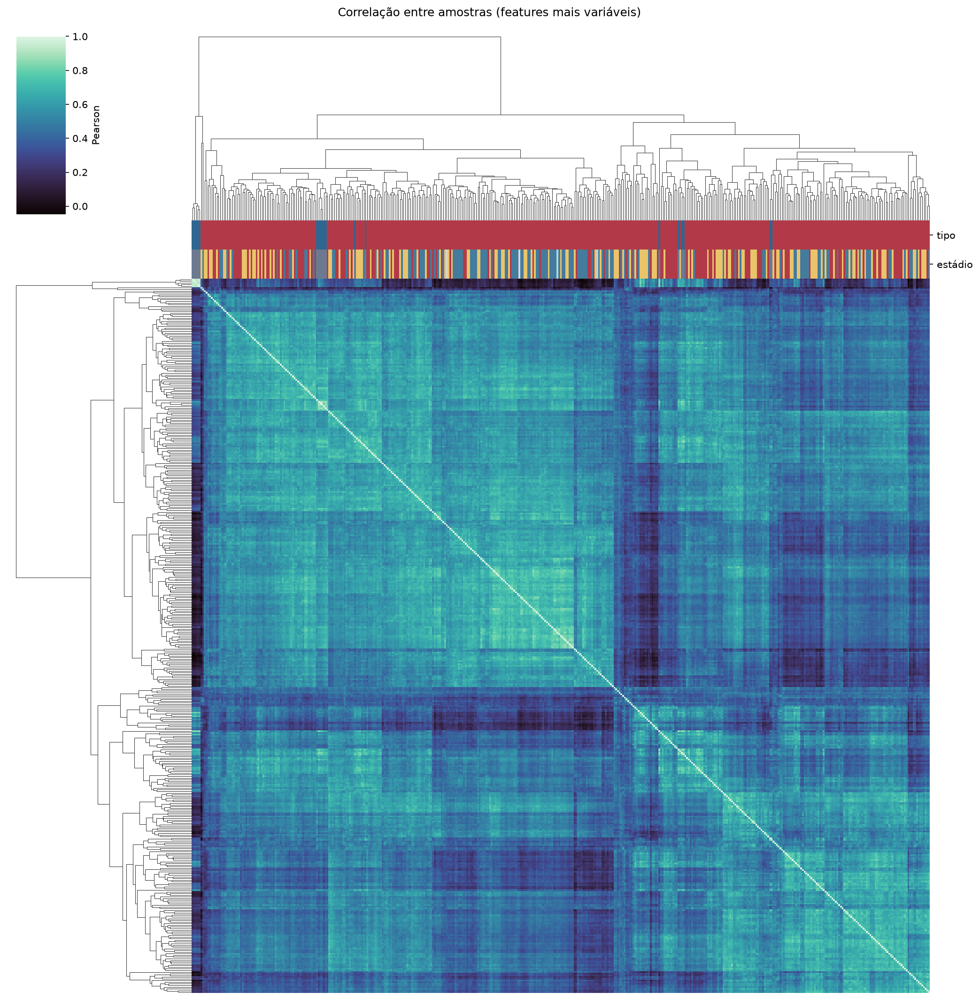
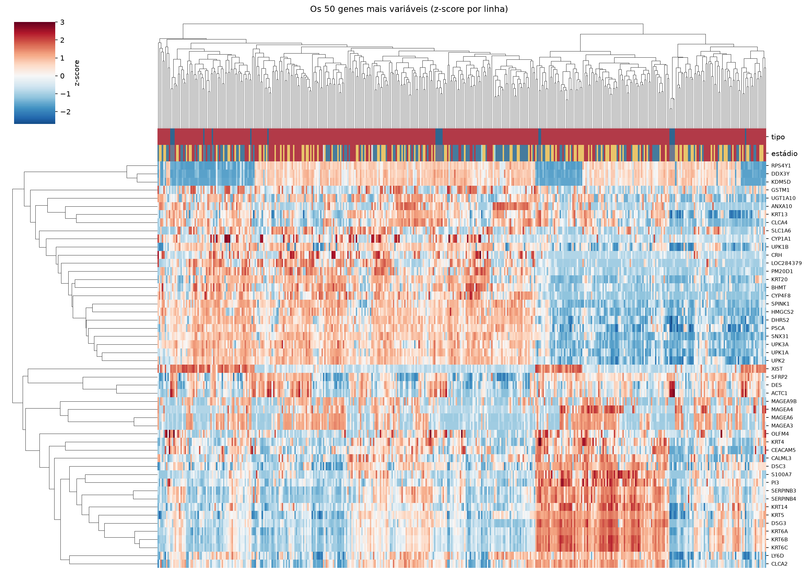
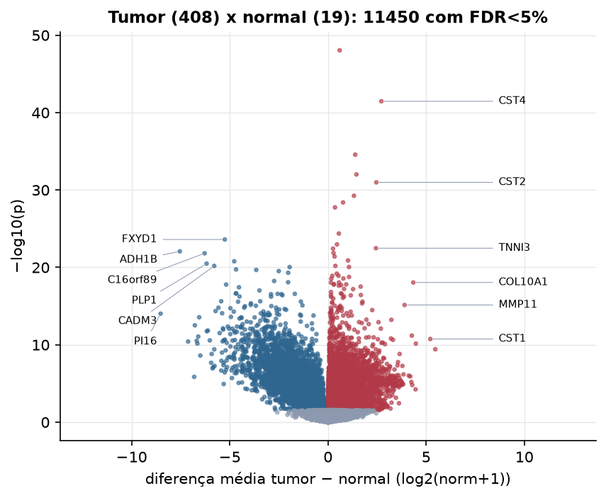
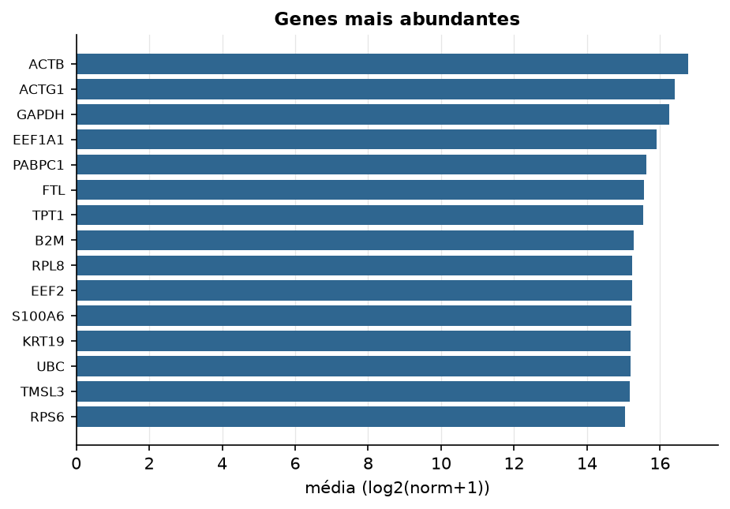

BLCA · RNA-seq (PanCanAtlas)
Illumina HiSeq, RSEM normalizado e corrigido por lote (EB++), log2(x+1) · gerado em 21/10/2026 18:21
20.531genes
408amostras tumorais
19amostras normais
0,0%valores faltantes
Fonte: PanCanAtlas EB++ via API do Xena
Estes valores já vêm normalizados e com correção de lote entre plataformas e centros. Servem bem para modelos gaussianos ou redes neurais; para um modelo de contagem use as contagens brutas do GDC.
Principais resultados
- 20.531 genes medidos em 427 amostras (408 tumorais e 19 normais); 0,0% dos valores estão faltando.
- Os dois primeiros componentes principais explicam 15,8% e 10,0% da variância das features mais variáveis.
- Correlação mediana entre amostras: 0,51.
- Amostras com correlação muito abaixo das demais (possíveis outliers técnicos): TCGA-BL-A13J-11, TCGA-BT-A2LA-01.
- Tumor x normal: 11450 genes diferentes com FDR < 5% (6233 maiores no tumor, 5217 maiores no normal; 19 pacientes têm o par tumor-normal).
- Mais aumentados no tumor: SNORA76, CST4, PAEP, SPDYC, CST2, AQP12B, C6orf126, LOC100130274.
- Mais reduzidos no tumor: FXYD1, ADH1B, C16orf89, SOX10, PLP1, CADM3, C16orf5, CFD.
- Associações clínicas com p < 0,05 nos componentes principais: PC1 com estádio (p=3.3e-07); PC2 com estádio (p=0.00069); PC1 com sexo (p=0.015); PC1 com idade (p=0.027); PC2 com idade (p=0.004); PC1 com sobrevida (p=0.0024).
- Em mediana, 80,4% dos genes têm expressão acima de log2(norm+1)=1 em cada amostra.
Distribuição dos valores


Estrutura das amostras




Tumor x normal

Features mais diferentes entre tumor e normal
| diferenca_tumor_menos_normal | t | p | fdr | |
|---|---|---|---|---|
| SNORA76 | 0.595 | 16.867 | 8.8e-49 | 1.78e-44 |
| CST4 | 2.718 | 18.637 | 3.39e-42 | 3.43e-38 |
| PAEP | 1.387 | 13.675 | 2.69e-35 | 1.82e-31 |
| SPDYC | 1.448 | 13.3 | 9.72e-33 | 4.92e-29 |
| CST2 | 2.463 | 17.534 | 1.02e-31 | 4.14e-28 |
| AQP12B | 1.322 | 12.791 | 5.48e-30 | 1.85e-26 |
| C6orf126 | 0.768 | 12.469 | 3.99e-29 | 1.15e-25 |
| LOC100130274 | 0.358 | 11.967 | 1.74e-28 | 4.39e-25 |
| TMEM82 | 0.553 | 11.078 | 4.18e-25 | 9.41e-22 |
| FXYD1 | -5.255 | -26.434 | 2.45e-24 | 4.96e-21 |
| SNORA72 | 0.458 | 12.135 | 1.07e-23 | 1.97e-20 |
| TNNI3 | 2.443 | 14.445 | 3.28e-23 | 5.53e-20 |
| SNORA10 | 0.257 | 10.547 | 3.74e-23 | 5.83e-20 |
| ADH1B | -7.545 | -24.448 | 8.38e-23 | 1.21e-19 |
| RXFP3 | 0.283 | 10.392 | 1.36e-22 | 1.83e-19 |
| C16orf89 | -6.282 | -27.859 | 1.5e-22 | 1.89e-19 |
| C17orf74 | 0.337 | 10.263 | 3.93e-22 | 4.68e-19 |
| IL1F7 | 1.021 | 12.175 | 1.26e-21 | 1.42e-18 |
| SOX10 | -4.774 | -25.407 | 1.62e-21 | 1.73e-18 |
| PLP1 | -6.18 | -26.336 | 3.25e-21 | 3.29e-18 |
| TLX1NB | 0.375 | 9.922 | 6.35e-21 | 5.86e-18 |
| CADM3 | -5.793 | -21.933 | 6.37e-21 | 5.86e-18 |
| HMX2 | 1.071 | 11.421 | 8.81e-21 | 7.64e-18 |
| C16orf5 | -1.952 | -15.958 | 9.06e-21 | 7.64e-18 |
| CFD | -4.68 | -24.04 | 1.82e-20 | 1.47e-17 |
| OLFM1 | -3.654 | -20.354 | 2.12e-20 | 1.65e-17 |
| PER1 | -2.503 | -21.064 | 2.96e-20 | 2.22e-17 |
| TPPP3 | -2.028 | -16.01 | 4.92e-20 | 3.56e-17 |
| SERPINA10 | 0.448 | 9.633 | 6.39e-20 | 4.46e-17 |
| C1orf105 | 0.536 | 9.553 | 1.2e-19 | 8.01e-17 |
Associação com variáveis clínicas
p-valores da associação dos três primeiros componentes principais (só tumores) com estádio (Kruskal-Wallis), sexo (Mann-Whitney), idade (Spearman) e sobrevida global (Cox univariado).
| estádio (Kruskal) | sexo (Mann-Whitney) | idade (Spearman) | sobrevida OS (Cox) | |
|---|---|---|---|---|
| PC1 (16,0%) | 3.32e-07 | 0.015 | 0.027 | 0.002 |
| PC2 (9,5%) | 0.00069 | 0.983 | 0.004 | 0.791 |
| PC3 (5,1%) | 0.707 | 0.083 | 0.792 | 0.778 |
Mais abundantes
